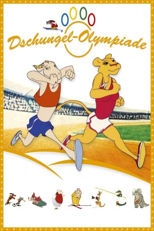

gesehen am 17.05.2019
gesehen am 17.05.2019Alternativ: Animalympics (Englischer Titel) gesehen am 17.05.2019
 
 IMDB-Wertung: 6.8 / 10
IMDB-Wertung: 6.8 / 10  Metascore:
Metascore: 
Der geheime Weltsicherheitsrat der Tiere hat beschlossen: Schluß mit dem Fressen und Gefressenwerden. Künftigwerden die Kräfte im sportlichen Wettkampf gemessen. Die erste Tierolympiade der Welt wird ausgerufen.Tierisch Spitzenathleten aller Kontinente streiten um die ersten Plätze. In den Disziplinen Humor und Komik sind sie alleunschlagbar. Die Fernsehgesellschaft Z.O.O. überträgt die animalischen Bestleistungen in alle Welt.Tintenfische im Zweier-Bob und Alligatoren beim Stabhochsprung lassen auch der abgebrühtesten Reporterschildkröte die Schuppen zu Berge stehen.
Jahr: 1980
Dauer: 78 Minuten
FSK: 6
Land: USA Studio: Avid Home EntertainmentTonspuren: DD2.0 - ,
Untertitel: Deutsch,
Auflösung: 1080p (1488x1080) Größe: 5580 MB
Genre: Komödie, Animation/Trick, Familie, Sport
Regisseur: Steven Lisberger
Drehbuch: Steven Lisberger, Roger Allers, John Norton, Steven Lisberger, Roger Allers
Soundtrack: Graham Gouldman
Darsteller:
 Billy Crystal als Rugs Turkell / Joey Gongolong / Art Antica
Billy Crystal als Rugs Turkell / Joey Gongolong / Art Antica Harry Shearer als Keen Hacksaw / Mayor of Animal Olympic Island / Burnt Woody / Mark Spritz
Harry Shearer als Keen Hacksaw / Mayor of Animal Olympic Island / Burnt Woody / Mark SpritzDatei: X:\Kinder Filme (A-F)\Dschungel-Olympiade (1980, FSK6, 1488x1080).mkv seit 16.05.2019
Festplatte: Kinder-Filme+Trick
 Es gibt insgesamt 68 Filme in der Gruppe 'Kinder Filme (A-F)'
Es gibt insgesamt 68 Filme in der Gruppe 'Kinder Filme (A-F)'